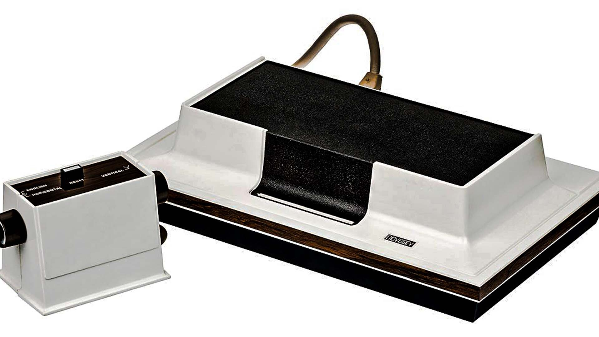
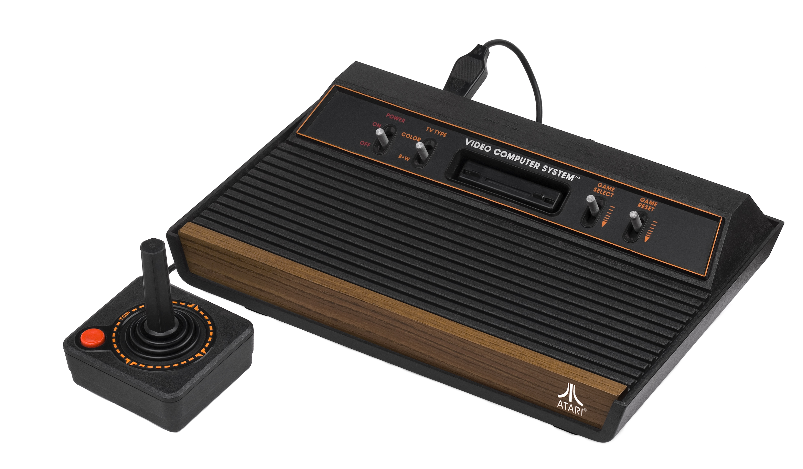
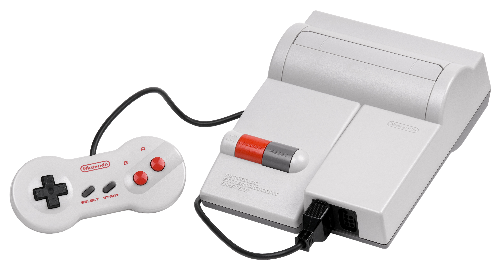
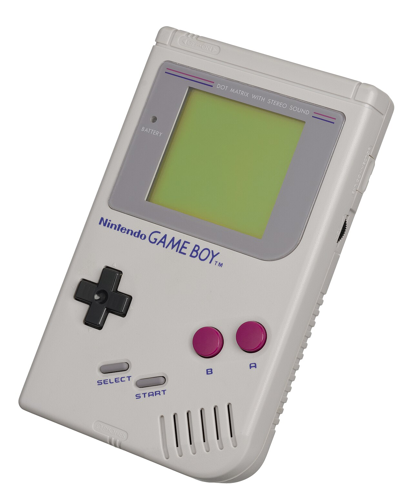

Архитектура платформ и эволюция железа
Сравните технические спецификации и внешний вид устройств, изменивших представление человечества о возможностях кремниевых процессоров.

- Процессор: Отсутствует (аналоговая логика)
- ОЗУ: Нет памяти
- Носитель: Карты переключения схем
- Продажи: ~350,000 штук
Первопроходец домашних систем (1972)
Абсолютно аналоговая система, созданная Ральфом Бером. Она не умела генерировать цветную картинку и даже считать очки счета — игроки записывали результаты на бумаге. Поставлялась с пластиковыми накладками на экран телевизора, которые заменяли собой игровую графику (поля, сетки, карты).

- Процессор: MOS 6507 (1.19 МГц)
- ОЗУ: 128 байт
- Графика: Чип TIA (128 цветов)
- Продажи: 30 миллионов штук
Революция сменных картриджей (1977)
Легенда, которая популяризировала концепцию продажи отдельных игр. До неё консоли имели лишь жестко прошитые с завода игры. Из-за отсутствия защиты патентов любой желающий мог писать игры под Atari, что в итоге привело к огромному кризису и затовариванию рынка низкокачественным софтом.

- Процессор: Ricoh 2A03 (1.79 МГц)
- ОЗУ: 2 КБ основного + 2 КБ видео
- Звук: Пятиполосный моно
- В РФ известна как: «Денди» (Dendy)
Спаситель мировой индустрии (1983)
8-битная система, которая вытащила индустрию из затяжной депрессии. Nintendo ввела жесткое лицензирование: одна студия могла выпускать не более 5 игр в год, а в консоль встраивался секретный чип проверки подлинности 10NES. Именно здесь зародились франшизы Super Mario, Zelda и Metroid.

- Процессор: Motorola 68000 (7.67 МГц)
- ОЗУ: 64 КБ + 64 КБ видео
- Звук: FM-чип Yamaha
- Главный символ: Еж Соник
Подростковый бунт и 16-битные войны (1988)
Sega бросила вызов детскому имиджу Nintendo. Рекламная кампания "Sega does what Nintendon't" и невероятно быстрый процессор Motorola обрабатывали спортивные симуляторы и динамичные аркады быстрее конкурентов. Звуковой чип Yamaha выдавал жесткие, роковые и электронные саундтреки.

- Процессор: Sharp LR35902 (4.19 МГц)
- Экран: Монохромный (4 оттенка)
- Питание: 4 батарейки АА (до 30 ч)